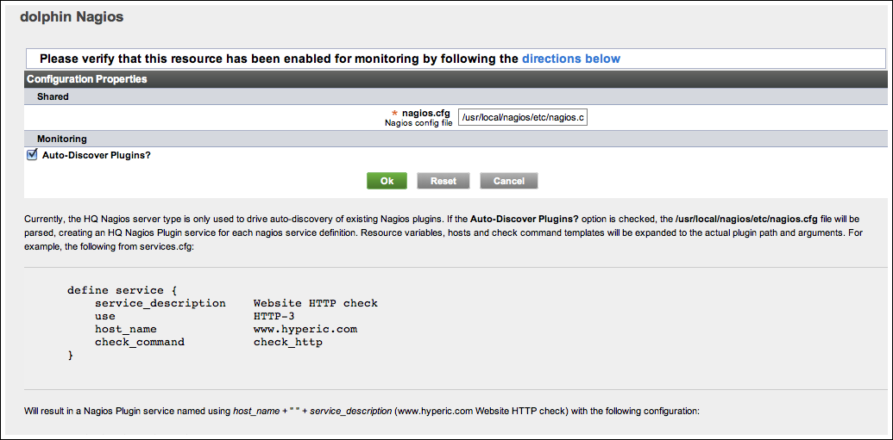

Topics marked with * relate to features available only in vFabric Hyperic.
Hyperic has built-in support for integration with Nagios. Hyperic imports your Nagios checks, runs them, and presents the results in the Hyperic user interface. Note that Hyperi runs the Nagios checks independently from Nagios. During the Hyperic implementation process, Nagios users find it useful to run Hyperic and Nagios side-by-side and compare results.
Nagios Resources and the Hyperic Inventory Model
To understand the configuration process and to interpret the Nagios data presented in the Hyperic user interface, it's helpful to understand how the elements of a Nagios implementation map to the Hyperic inventory model.
| For information about the inventory types in Hyperic, see Resources, Resource Types and Inventory Types. |
- Nagios server host---The machine that hosts the Nagios server is a platform in Hyperic. The Hyperic Agent you install on it auto-discovers it, and the platform type. Its name is its fully qualified domain name (FQDN).
- Nagios server — The Nagios server itself, is a server in Hyperic. Its server type is "Nagios".
- Nagios plugins — Each Nagios plugin, sometimes referred to as a script, check, or command, is represented by a service of type "Nagios Plugin"in Hyperic.
This table summarizes the inventory facts that relate to how Nagios items are represented in Hyperic.
| Nagios item | Hyperic inventory type | Hyperic resource type | name in Hyperic | metric reported in Hyperic |
| system that hosts the Nagios server | platform | a supported Hyperic platform type (Linux, | its FQDN | Availability |
| the Nagios server | server | Nagios | HypericPlatformName+"Nagios" | availability |
| each Nagios plugin | is a service | Nagios Plugin | HypericPlatformName+ "NagiosPlugin"+ NagiosPluginName+ NagiosHost |
Execution time Return code |
| all Nagios plugins | belong to an autogroup | "Nagios Plugin" |
Management Functions
Auto-Discovery
If Nagios is installed in the location that the agent expects, the agent auto-discovers it, and creates a resource whose name is the the concatenation of the host platform's name and the Hyperic server type for the Nagios server "Nagios". For instance:
bear Nagios
If auto-discovery of Nagios plugins is enabled for the Nagios server resource in Hyperic, the Hyperic Agent creates a "Nagios Plugin" service for each Nagios plugin defined in the Nagios configuration file. The name of the service in Hyperic is the contcatenation of:
-
- The first segment of the FQDN of the platform where the Nagios server runs.
- The string "Nagios Plugin"
- Either the value of the "service_description" property as defined in the Nagios definition of the plugin or the string "check_command",
- The hostname of the monitored resource. For example:
bear Nagios Plugin PING patriot.intranet.myco.net or
bear Nagios Plugin check_command patriot.intranet.myco.net
Note: Hyperic creates an autogroup named "Nagios Plugin" that contains all of the Nagios plugins
Metric Collection
The following metric are report for each Nagios plugin service.
- Availability — Reflects the availability of the Nagios check itself, rather than the service it is monitoring. The value is derived from the Nagios plugin's return code:
- 0 == OK
- 1 ==
 Warning
Warning - 2 ==
 Critical
Critical - 3 ==
 Unknown
Unknown - other == Unknown
- Execution Time — time to execute the Ngios check.
- Result Value — Result value, if one is returned by the plugin.
- Return Code — The numerical values of the Nagios return code.
Log Tracking
Log tracking is enabled by default for Nagios plugin services. The plugin output is used as the log message and exit codes are mapped to Hyperic log levels as follows:
- 0 - Info (OK)
- 1 - Warn (Warning)
- 2 - Error (Critical)
- 3 - Error (Unknown)
- other - Error (Unknown)
Configure Nagios Monitoring
Prerequisites
To enable Nagios integration, you install an Hyperic Agent on the system that hosts your Nagios server. The agent must run under an account with permission to execute the Nagios plugins.
Install Hyperic Agent
- Install the Hyperic Agent on the Nagios server host.
- Start the Hyperic Agent on the Nagios server host.
- If Nagios was installed from source in /usr/local/nagios, Hyperic will parse the nagios.cfg file and create an service in Hyperic of type "Nagios Plugin" for each nagios service definition in the configuration file.
Note: If the Hyperic Agent on the Nagios platform does not find the nagios.cfg file, follow the instructions in Create and Configure Nagios Server Resource for Monitoring.
Create and Configure Nagios Server Resource for Monitoring
Perform these steps if the Hyperic Agent on the Nagios platform does not find the nagios.cfg file, and hence does not create a "Nagios Plugin" service resource for each Nagios plugin.
- In the Hyperic user interface, browse to platform where the Nagios server runs.
- From the Tools menu, select the New Server option.
- On the New Server page, enter required properties and click OK:
- Name — Enter a name for the new server.
- Owner — Defaults to the Hyperic account under which the server is being created.
- Description — (Optional) Enter a description of the server.
- Server Type — Select "Nagios" from the pulldown.
- Host Platform — Defaults to the platform on which you created the server.
- Install Path — Enter the path to your Nagios installation.
- The Inventory page for the new server appears, and displays this message:
This resource has not been configured. Please set its Configuration Properties. - Click the blue Configuration Properties link in the message.
- The Configuration Properties page appears.

- The Configuration Properties page appears.
- On the Configuration Properties page:
- nagios.cfg — This property defaults to etc/nagious.cfg. Enter the correct path the the Nagios configuration file.
- Auto-Discover Plugins? — By default, this property is checked. Leave plugin auto-discovery enabled if you want all Nagios plugins to be discovered. If you wish to integrate selected plugins, you can do so by manually creating a service of type "Nagios Plugin" on the Nagios server resource for each Nagios plugin whose data you wish to integrate into Hyperic.
Configure Hyperic Alerts on Nagios Checks
You can define a metric threshold alert to fire based on the Return Code metric for a Nagios check, so that you, or other responsible parties are notified when a check script exits with an unacceptable value.
You define such alerts at the service level, in Hyperic inventory terms. A Nagios check's name in Hyperic contains the name of the monitored host, so you can tell which host triggered the alert.
View Nagios Resources and Metrics in Hyperic
View Nagios Service Detail
Select Nagios Availability from the Resources tab in the masthead.
The page displays the most recent results of the Nagios checks. This is the same information that is displayed on the Nagios Service Details page.
- Host--- The host that the Nagios check is monitoring
- Service — The Nagios plugin used to perform the check
- Status — The Return Code from execution of the check
- Last Check — When the check was last run
- Event Log — Output of the plugin
Each line is color-coded:
- Pink — monitored service is down.
- Yellow — monitored service has triggered an alert, based on the threshold defined in Nagios.
- Green — monitored service is OK.

View a Nagios Check
To view a Nagios check in the Hyperic User Interface
- Browse the the Nagios server resource using Resources > Browse > Servers > Nagios.
- Choose the Nagios server from the list of servers.
- The Indicators tab for the Nagios server appears.

- The Indicators tab for the Nagios server appears.
- In the Resources mintab, click the autogroup called "Nagios Plugin", which contains the Nagios checks.
- The first chart on the Indicators tab shows the average execution time for the all of the checks in the group.
- Note: (Charts of average Result Values and Return Codes are also presented, but this data is not meaningful for a group.)

- Note: (Charts of average Result Values and Return Codes are also presented, but this data is not meaningful for a group.)
- Click on a specific check in the Group Members list.
- The Indicators tab for the Nagios service appears.

- The Indicators tab for the Nagios service appears.
- To view log messages output by the check, click the blue icons above the time range bar at the bottom of the page.